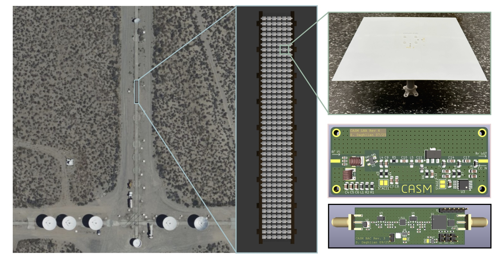
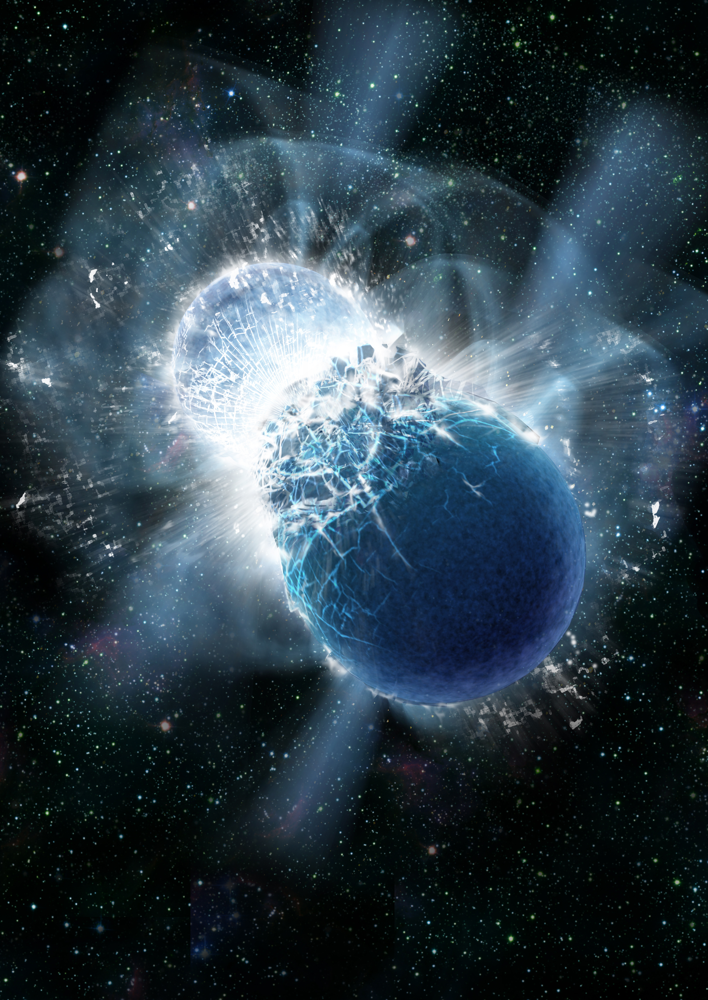
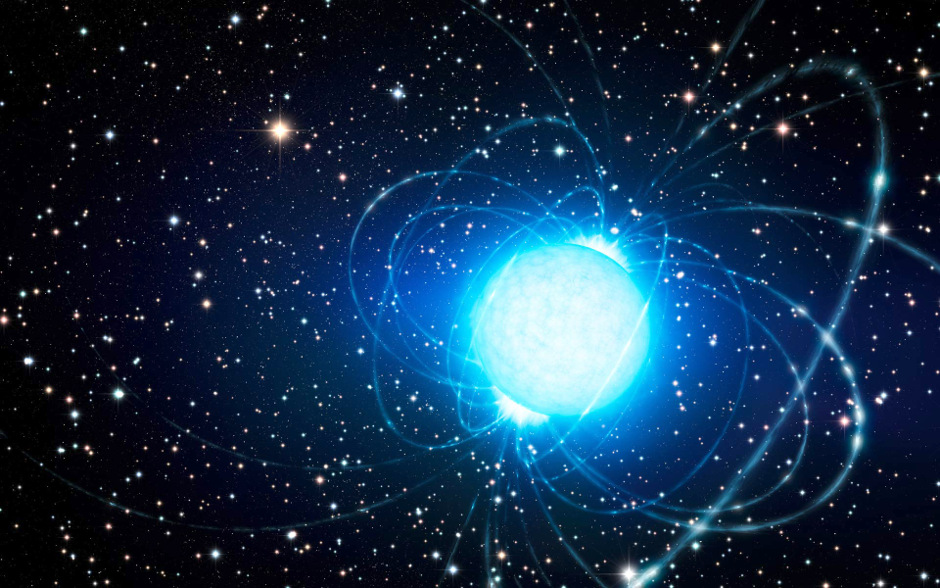

Coherent All-Sky Monitor (CASM)
A dense aperture array for transient radio astronomy

A dense aperture array for transient radio astronomy
Modern radio telescopes are fundamentally computational in nature. Cosmic radio waves are "sampled" by ultrafast digital electronics, and images are formed, cleaned, and processed on clusters of graphics processing units (GPUs). In the limit of infinite compute, one could build an "omniscope" that can see all directions, all radio wavelengths, and all times.
We have begun to build an all-sky all-the-time radio telescope to search 10,000 square degrees for transient radio phenomena. We call this telescope CASM or the Coherent All-Sky Monitor. The Pathfinder instrument will be made of 256 printed circuit board (PCB) dipoles at the Owens Valley Radio Observatory (OVRO). The concept is highly scalable: If one can build a 256-element array, then a 2048- or 16,384-element array is also achievable, limited only by computing power, electricity, and RF equipment.
By doing away with dishes, our dipoles can "see" nearly the whole visible sky simultaneously. This will eventually allow us to detect strongly lensed FRBs, coherent emission coincident with gravitational wave events, and Galactic magnetars. CASM will find the brighest, nearest extragalactic FRBs, allowing us to study in detail the FRB phenomenon in our backyard.
CASM-256 Animation: This animation shows a simulated sky rotating over CASM-256, in comparison with a traditional radio telescope with a modest field-of-view but more collecting area. Since FRBs are fleeting, only an all-sky monitor can detect the brighest, rarest, most nearby FRBs. The sky map is from my student Ralf Konietzka's recent work on FRB ray tracing in IllustrisTNG.
The photo to below shows a rendering of the 256-element CASM on a satellite image of OVRO's north-south rails. A prototype antenna is also shown, along with analog electronics. The full array will be deployed in the next several months.

The value of a sensitive array that can see most of the sky all of the time is difficult to overstate. For the sake of focus, we note here the short timescale science that can uniquely be done with an all-sky monitor.
A small fraction of FRBs will be strongly gravitationally lensed by massive intervening objects, producing multiple copies of the same radio pulse arriving at different times. This would be really powerful, because we could search for primordial black holes and even measure the expansion of the Universe in real-time. An all-sky monitor like CASM will be able to detect these lensed FRBs, because it will see the majority of the visible Northern sky 24/7.

Theoretical astrophysicists have predicted the emission of brief radio pulses coincident with gravitational wave events. For example, two inspiralling neutron stars may emit coherent radio emission just before colliding. To date, we have not been able to test this theory because we do not know where the next gravitational wave event will occur. For this, we need an all-sky monitor like CASM. Image credit: Dana Berry, SkyWorks Digital, Inc.

A dramatic link between FRBs (cosmological and very far away) and known Galactic phenomena was made in April of 2020, when STARE2 and CHIME detected an extremely bright radio burst from a known magnetar in the Milky Way. This was only possible because STARE2 had an enormous field of view. CASM will be roughly 500 times more sensitive than STARE2 and will find many more Galactic FRB analogs.
